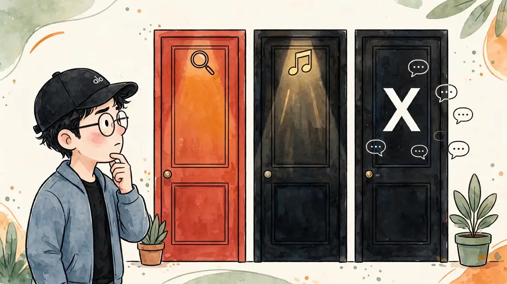

我跟 Muse 打了个电话，全程没听出一点机器人味
第一次跟 Muse 打语音电话：本来是谈正事的，它先让我挑声音、给我讲段子，还记得我家的猫；笑着聊着，正事一件没落，全办完了。全程没听出一点机器人味——这是我今年用 AI 最惊讶的一次。
看橘子哥 · 3 分 14 秒打开全文 →
真实 Agent 案例 · 提示词拿走就能用
把跟当地人通话的录音、旅行视频文字稿和自己的偏好一起交给 Claude Code，它排好行程、带人订好机票和游览项目，最后生成一个可分享的逐日行程网站和一份带凭证、收据与航班号的可打印手册，还提前发现了目的地罢工并改了受影响的行程。
帮我规划一次去 [目的地] 的旅行，从 [出发日期] 到 [返回日期]，预算 [金额]。做一个简单的逐日行程网站和一份可打印指南，把航班号、酒店和游览项目的确认信息、凭证和收据都从 [文件夹路径] 里的文件收集起来。在预订或付款之前，停下来把确切细节和价格给我确认；拿到网站和可打印 PDF 才算完成。
Help me plan a trip to [destination] from [start date] to [end date] with a budget of [amount]. Build a simple day-by-day itinerary website and a printable guide that collects flight numbers, hotel and tour confirmations, vouchers, and receipts from the files in [folder path]. Before booking or paying for anything, stop and show me the exact details and price for approval; you're done when I have both the site and a printable PDF.
微软副总裁 Omar Shahine 给 Teams 里的常驻 Agent Scout（绰号 Sebastian）立了两条规矩：守住家庭晚饭时间，绝不让会议挤进来；同时把别人向他许的诺、他向别人许的诺，全部记进一张持续更新的承诺清单。
做我的常驻助理。守住 [时间段，例如工作日晚饭 18–20 点]，凡是与之重叠的会议邀请，一律拒绝或标记出来；同时把我做出的承诺、别人向我做出的承诺，从邮件和日历里汇总成一张持续更新的清单，注明 [谁、什么事、截止日期]。在替我发任何邮件或拒绝任何邀请之前，先给我看草稿、等我批准，格式保持简短干净。
Act as my always-on assistant. Protect [time block, e.g. 6-8pm weekday dinner] by declining or flagging any meeting invites that overlap it, and log every commitment I make or that others make to me from my email and calendar into a running list with [who, what, due date]. Before sending any email or declining any invite on my behalf, show me the draft and wait for my approval, and keep the formatting short and clean.
把逐项账单或续费通知原文贴进 ChatGPT，让它标出每一行里不是固定费用的部分，再写一份打电话要留客优惠的话术，适用电话、宽带、保险续费这类首年价到期就涨的账单。
这是我的逐项 [电话/宽带/保险] 账单或续费通知：[粘贴文本]。标出所有固定费用、附加费或看起来可以协商、可以省掉的收费，并注明哪些大概率动不了。然后写一份简短的电话话术，用来向服务商要留客优惠或更低费率，包括对方拒绝时该说什么、要提哪些具体收费项目。最后按可能省下的金额排序，列出最值得谈的三项。
Here is my itemized [phone/internet/insurance] bill or renewal notice: [paste text]. Flag any fixed fees, add-ons, or charges that look negotiable or avoidable, and note which ones likely can't be changed. Then write a short phone script for asking for a retention offer or lower rate, including what to say if they refuse and which specific line items to bring up. Finish with the top three asks ranked by likely savings.
作者的 Hermes Agent 常驻在一台 Ubuntu 小主机上：写博客时起草、翻成德语和波斯语、加 SEO 信息、在 Git 工作区里开 PR；做视频时每小时扫博客 RSS，有新文章就剪 Shorts 和每周合集，先私密上传，再发一个 Telegram 批准按钮，人点了才公开。
每周就 [主题或素材] 用 [语言] 写一篇博客，翻译成 [第二语言]，准备好发布到 [网站或托管平台]。把草稿发到 [Telegram 或其他聊天应用] 给我，在我明确批准之前不要发布任何内容。我批准后，发布并把上线链接发给我。
Each week, draft a blog post on [topic or source material] in [language], translate it into [second language], and prepare it for publishing on [site or host]. Send me the drafts on [Telegram or other chat app] and wait for my explicit approval before publishing anything. Once I approve, publish and send me the live links.
把 Dots Agent 接到 Gmail、Google Calendar 和 Drive，任务只有一个：为明天做好准备。它扫日历、扫答应过要办或一直没回的邮件、扫 Drive 里被 @ 的文件，合成一张行动单，每天早上 8 点定时发同一份汇总，用的还是它自己写的一份只读简报。
以只读权限接入我的 Gmail、Google Calendar 和 Google Drive，先写下你会遵守的规则，确保你绝不发送、删除或修改任何内容。然后查看我的未读邮件、本周日历和 [Drive 文件夹或项目名] 里最近变动的文件，给我一份今天的优先行动清单，注明每项的来源。设成每个 [工作日早上 8 点] 给我发同样的汇总，等我批准第一份清单后再开始。
Connect to my Gmail, Google Calendar and Google Drive with read-only access, and write down the rules you will follow so you never send, delete, or edit anything. Then go through my unread email, this week's calendar, and recently changed files in [Drive folder or project names] and give me one prioritized action list for today with the source of each item. Set it up to send me the same summary every [weekday morning at 8am], and stop once I've approved the first list.
来源 agentusecases.ai 每日收录 · 按「能省时间、能赚钱、今天就能抄作业」筛过，纯炫技的不要。
第一次跟 Muse 打语音电话：本来是谈正事的，它先让我挑声音、给我讲段子，还记得我家的猫；笑着聊着，正事一件没落，全办完了。全程没听出一点机器人味——这是我今年用 AI 最惊讶的一次。
用 Muse 免费额度做一部 24 秒三镜短片：定妆照、参考图改场景、图生视频、拼接成片、声音处理——每一步都附实测提示词（可直接抄）和验收清单。

十九岁的王大可，账号被封的五十天里给一家年营收千万的教育公司做 AI 化转型：一个人补六个岗位，把学情报告从五道人工转手做到表单一提交自动开跑。他留下的分工原则只有一句——Agent 能走的流程走完，剩下的人来定。

宝玉用自己做了三年的字幕翻译软件，讲透 AI 产品怎么做：盯着模型能力边界找需求，连闯能力、成本、价值三关；最小验证、推倒重设计；人的价值在定义问题和验收结果两头——像训练大模型一样训练自己。

前腾讯程序员西堂：副业一年挣不到一万，押中 AI 视频换来第一单，靠培训筛人攒下团队；漫剧风口塌了果断收手，最后在公众号商单上跑通月入十万。

选平台这个问题问反了 — 先盘清你的核心资产、再想清靠什么赚钱、最后才匹配平台机制。小红书争「有用」、抖音争「停留」、X 争「生态位」。
时隔五年再访老客户：一家数字医学公司，怎么把最强的 AI 用进全公司。

不到 20 分钟，帮一位外企高管搭好整套 AI 环境、用上专属 AI。

大学室友的工厂年产值上亿 — 他每个月只多花 200 美元，把 AI 用进了生产。

AI 游记第一站：到杭州看 AI 怎么走进影视制作。